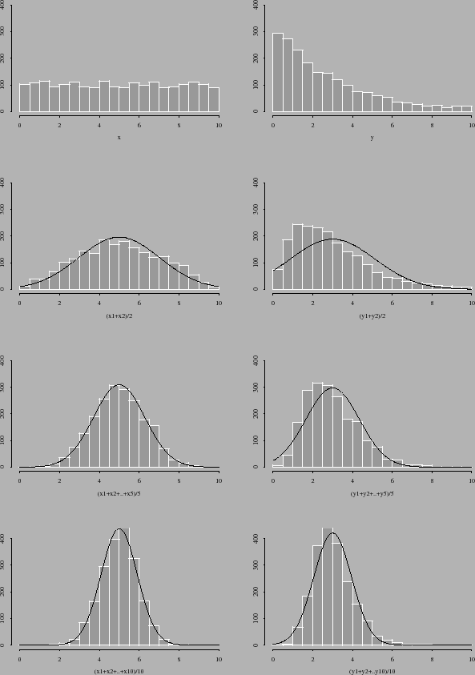
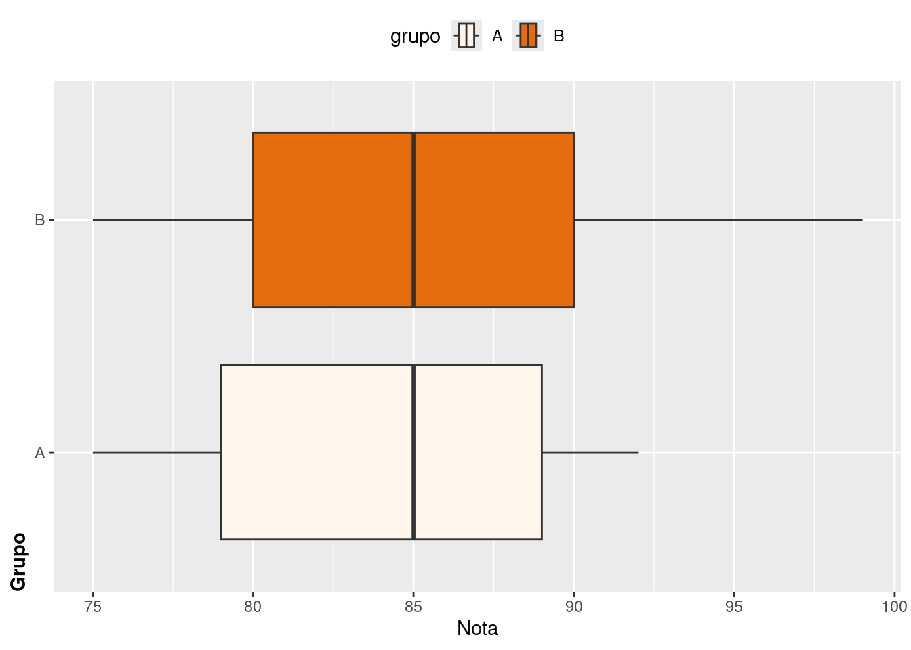
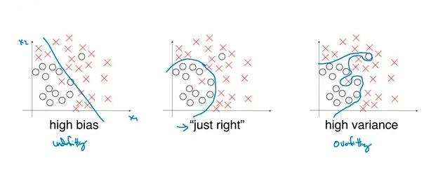

Um sistema de pagamentos, registra as transações dos seus usuários em duas tabelas:
Users: Contém o registro de usuários do sistema. Os seus atributos são:
id: Identificador único de usuário
age (idade): em anos
país de residência: país onde o usuários indicou que reside
Transactions: Que contém o registro de todas as transações que os usuários realizam através do sistema.
transaction_id: Identificador único da transação
transaction_date: Data na qual a transação foi realizada. O tipo é timestamp, ou seja, é um tipo de data que contém o ano, mês, dia, hora, minuto e segundos.
user_id: Identificador do usuário que realizou a transação (é uma chave externa à tabela users)
transaction_state: Campo que indica o estado da transação que pode ser INITIATED, SUCCESS, FRAUD or CANCELLED.
transaction_amount: Valor da transação em USD
Com estes dados disponíveis, precisamos gerar queries SQL para responder às seguintes perguntas. Para fins didáticos, criei esses bancos de dados para simular a resolução das questões.
tabela_transactions
knitr::kable(tabela_transactions)
user_id
transaction_date
transaction_id
transaction_state
transaction_amount
data_curta
1
2024-03-12 15:08:49 UTC
255
sucesso
119.65
2024-03-12
2
2024-03-23 20:08:03 UTC
585
INITIATED
22.63
2024-03-23
3
2024-03-18 10:56:25 UTC
178
CANCELLED
225.87
2024-03-18
4
2024-03-12 08:21:32 UTC
887
SUCCESS
16.58
2024-03-12
5
2024-03-30 05:24:49 UTC
569
FRAUD
1225.89
2024-03-30
6
2024-03-21 12:32:51 UTC
789
SUCCESS
59.90
2024-03-21
7
2024-03-10 08:25:49 UTC
236
FRAUD
256.98
2024-03-10
7
2024-03-10 05:21:49 UTC
458
FRAUD
986.69
2024-03-10
7
2024-03-09 01:08:49 UTC
125
FRAUD
1256.89
2024-03-09
tabela_user
knitr::kable(tabela_user)
id
age
pais
1
18
Brasil
2
29
Estados Unidos
3
55
África do Sul
4
32
Bolívia
5
60
Brasil
6
42
Brasil
7
38
África do Sul
Para que a experiência do SQL seja real, vou conectar as bases com o SQLite.
Qual é a idade média de usuários do sistema por país?
Resposta
<SQL>SELECT `pais`, ROUND(AVG(`age`), 2) AS `media_idade`FROM `tabela_user`GROUPBY `pais`
Qual é o país com a maior quantidade de dinheiro transacionado (considere só transações finalizadas com sucesso ou “SUCCESS”)?
Como vamos precisar do merge das duas tabelas, vou criar a tabela_merge sem algum filtro para facilitar as consultas e não alocar memória desnecessária.
tabela_merge <- tabela_transactions %>% dplyr::left_join(tabela_user, by =c("user_id"="id"))
Resposta
<SQL>SELECT `user_id`, `transaction_date`, `transaction_id`, `transaction_state`, `transaction_amount`, `data_curta`, `age`, `pais`FROM (SELECT `q01`.*, RANK() OVER (ORDERBY `transaction_amount` DESC) AS `col01`FROM (SELECT `tabela_transactions`.*, `age`, `pais`FROM `tabela_transactions`LEFTJOIN `tabela_user`ON (`tabela_transactions`.`user_id` = `tabela_user`.`id`) ) AS `q01`WHERE (`transaction_state` ='SUCCESS'OR `transaction_state` ='sucesso')) AS `q01`WHERE (`col01` <=1)
Qual é o país com maior taxa de fraude em porcentagem respeito ao número de transações totais no país?
Resposta
<SQL>SELECT `user_id`, `transaction_date`, `transaction_id`, `transaction_state`, `transaction_amount`, `data_curta`, `age`, `pais`, `taxa`FROM (SELECT `q01`.*, RANK() OVER (ORDERBY `taxa` DESC) AS `col01`FROM (SELECT `q01`.*, `transaction_amount` /SUM(`transaction_amount`) OVER (PARTITIONBY `transaction_state`) AS `taxa`FROM (SELECT `tabela_transactions`.*, `age`, `pais`FROM `tabela_transactions`LEFTJOIN `tabela_user`ON (`tabela_transactions`.`user_id` = `tabela_user`.`id`) ) AS `q01` ) AS `q01`WHERE (`transaction_state` ='FRAUD')) AS `q01`WHERE (`col01` <=1)
Na mesma linha da pergunta anterior, responda qual é a faixa de idade de usuários que mais cometem fraude (em percentagem). Separe as faixas etárias em: (< 18 anos, 18-30 anos, 30 - 45 anos, 45 - 60 anos, 60 > anos) e considere que para responder essa pergunta, você deverá considerar o fato que um usuário pode ter executado várias transações, das quais poucas (ou muitas) podem ter sido fraude entre as demais.
Resposta
SELECT `user_id`, `transaction_date`, `transaction_id`, `transaction_state`, `transaction_amount`, `data_curta`, `age`, `pais`, `age_cat`, `taxa_idade`FROM (SELECT `q01`.*, RANK() OVER (ORDERBY `taxa_idade` DESC) AS `col01`FROM (SELECT `q01`.*,CASEWHEN (`age` <18.0) THEN'menor que 18 anos'WHEN (`age` >=18.0AND `age` <30.0) THEN'18-29 anos'WHEN (`age` >=30.0AND `age` <45.0) THEN'30-44 anos'WHEN (`age` >=45.0AND `age` <60.0) THEN'45-59 anos'WHEN (`age` >=60.0) THEN'maior igual a 60 anos'ENDAS `age_cat`,CASEWHEN (`transaction_state` ='FRAUD') THEN (`transaction_amount` /SUM(`transaction_amount`) OVER ()) WHENNOT (`transaction_state` ='FRAUD') THEN0.0ENDAS `taxa_idade`FROM (SELECT `tabela_transactions`.*, `age`, `pais`FROM `tabela_transactions`LEFTJOIN `tabela_user`ON (`tabela_transactions`.`user_id` = `tabela_user`.`id`) ) AS `q01` ) AS `q01`) AS `q01`WHERE (`col01` <=1)
Imagine que a camada executiva da empresa dona do sistema, precisa criar um Dashboard para monitorar o estado das transações nos últimos 3 dias. Para isso você precisa criar uma query SQL que calcule o número e dinheiro das transações não finalizadas, número e dinheiro de transações finalizadas com sucesso (SUCCESS), o número e dinheiro de transações canceladas (CANCELLED), o número e dinheiro de fraudes (FRAUD), agrupado por país, nos 3 dias anteriores de quando o executivo da empresa consulte seu Dashboard.
Resposta
<SQL>SELECT `q01`.*,COUNT(*) OVER `win1` AS `n_transacoes`,SUM(`transaction_amount`) OVER `win1` AS `dinheiro`FROM (SELECT `user_id`, `transaction_date`, `transaction_id`,CASEWHEN (`transaction_state` ='sucesso') THEN'SUCCESS'WHENNOT (`transaction_state` ='sucesso') THEN `transaction_state` ENDAS `transaction_state`, `transaction_amount`, `data_curta`, `age`, `pais`, `tres_n`FROM (SELECT `q01`.*,CASEWHEN ((DATE('now') -1.0) = `data_curta`) THEN1.0WHENNOT ((DATE('now') -1.0) = `data_curta`) THEN (CASEWHEN ((DATE('now') -2.0) = `data_curta`) THEN1.0WHENNOT ((DATE('now') -2.0) = `data_curta`) THEN (CASEWHEN ((DATE('now') -2.0) = `data_curta`) THEN1.0WHENNOT ((DATE('now') -2.0) = `data_curta`) THEN0.0END) END) ENDAS `tres_n`FROM (SELECT `tabela_transactions`.*, `age`, `pais`FROM `tabela_transactions`LEFTJOIN `tabela_user`ON (`tabela_transactions`.`user_id` = `tabela_user`.`id`) ) AS `q01` ) AS `q01`WHERE (`tres_n` =1.0)) AS `q01`WINDOW `win1` AS (PARTITIONBY `pais`, `transaction_state`)
Tarefa 02: Python
Numa tribo ancestral e muito desenvolvida, orientada principalmente por uma cultura lógica e matemática, os nativos estão interessados no estudo das linguagens de outras tribos e civilizações.
Durante seus estudos, estes perceberam que as linguagens dessas outras civilizações são compostas por um conjunto de símbolos (letras do alfabeto) que são agrupados e combinados para representar conceitos (palavras). Assim mesmo, estes também sabem que cada civilização possui um alfabeto específico.
Na tentativa da tribo de avançar nos seus estudos, estes desejam saber qual seria o número de palavras possíveis a serem criadas em função do tamanho da palavra e o conjunto de símbolos (alfabeto) da civilização em estudo, independentemente se essas “palavras” representam algum significado ou não.
Você, que compartilha os atributos da tribo enquanto as capacidades analíticas e lógicas, precisa ajudá-la escrevendo um algoritmo para fazer o cálculo descrito acima, considerando que tribo oferecerá para você o alfabeto da civilização e o tamanho da palavra/combinação. Seu algoritmo deveria ser capaz de calcular que o número total de palavras possíveis (independente se tem significado ou não) é de 16.
OBS: NÃO PRECISA ESCREVER A LISTA DAS PALAVRAS, A TRIBO SÓ PRECISA DO NÚMERO!
Resposta
Esse é um claro problema de análise combinatória com reposição/reposição.
from itertools import combinations_with_replacement,chain# Obtem todas as combinações de [1, 2, 3] e tamanho 2comb_A = combinations_with_replacement([1, 2, 3], 2)print(len(list(comb_A)))
6
Para ajudar a tribo ainda mais! Você deverá modificar seu algoritmo (ou talvez escrever um novo) para fazer o mesmo cálculo, só que agora, as palavras não podem ter símbolos repetidos.
Resposta
Esse também é um claro problema de análise combinatória, mas, nesse caso, é um problema em que não há reposição.
from itertools import combinations# Obtem todas as permutações de {@,d,2,b} comb_B = combinations([1, 2, 3], 2)print(len(list(comb_B)))
Considerando os dados, responda a que distribuição (paramétrica) os dados se aproximam.
Resposta
vinte_percentil
mean
median
oitenta_percentil
desvio_padrao
163.6
174.2308
175
184.2
11.25577
De acordo com o gráfico abaixo, a distribuição da variável altura pode ser descrita por uma normal, mas para fins de decisão, deve-se munir de testes paramétricos ou não paramétricos. Veja que sua variabilidade indica que os valores observados tendem a estar distantes da média – ou seja, a distribuição é mais “espalhada”.
Com suas próprias palavras, explique em que consiste o teorema central do limite, e se possível, mencione a sua importância no campo da inferência estatística.
Resposta
O Teorema do limite central (TLC) basicamente demonstra a tendência de aproximação das variáveis aleatórias com a distribuição normal, em que a aproximação da distribuição Normal melhora na medida que se fizesse a média do lançamento de mais dados. Esse comportamento pode ser visualizado na imagem abaixo. Na estatística, há provas que um n igual a 30 é suficientemente grande para que essa amostra seja descrita com uma distribuição normal e, por isso, é fácil encontrar análises clássicas com todos os pressupostos violados por seus pesquisadores devido a esta pressuposição do n igual a 30.

Teorema do Limite Central
Suponha que numa escola, 2 grupos diferentes de estudantes (Grupo A e Grupo B) fazem o mesmo teste de matemáticas. As pontuações para cada grupo são dados pelos seguintes datasets:
Grupo A: {80, 85, 88, 90, 92, 75, 78}
Grupo B: {75, 78, 82, 85, 87, 93, 99}
Elabore um teste de hipótese para determinar se existe uma diferença estatisticamente significativa entre a média das pontuações dos dois grupos com uma confiança de 95%.
Resposta
Antes de qualquer levantamento de hipótese, é bom analisar as medidas de tendência central de cada grupo e também graficamente e, de acordo com a tabela abaixo, não há muitas evidências de que essa média entre os grupos seja diferente, mas é evidente que o grupo B tem uma variabilidade maior em relação as notas (desvio padrão = 8.363754).
vinte_percentil
mean
median
oitenta_percentil
desvio_padrao
163.6
174.2308
175
184.2
11.25577

É importante ressaltar que a verificação dos pressupostos é de extrema relevância para que os insights e conclusões sejam verdadeiramente corretos. Neste casso, estamos supondo que as duas amostras são independentes e, em caso de teste de médias, usaríamos o teste t independente que apresenta dois pressupostos:
Normalidade da variável dependente de cada grupo
Homogeneidade de variâncias (ou seja, grupos com variâncias homogêneas)
Normalidade
Para verificar a normalidade dos dados, é recomendável utilizar o teste de Shapiro WIlk quando o número de amostra é menor que 50. A estatı́stica T (ou T ) é basicamente o quadrado de um coeficiente de correlação, onde o coeficiente de correlação de Pearson é calculado entre a estatı́stica ordenada X i na amostra e o escore ai , que representa o que a estatı́stica ordenada deveria parecer se a população é Normal. Portanto, as hipóteses levantadas são:
\(H_{0}\) : F(x) é função de distribuição normal; \(H_{1}\) : F(x) não é função de distribuição normal;
grupo
variable
statistic
p
A
nota
0.9434822
0.6702574
B
nota
0.9727151
0.9172920
Veja que de acordo com o teste de Shapiro Wilk, ao nível de 95% de significância, não rejeita-se a hipótese nula, ou seja, a variável notas é descrita por uma distribuição normal.
Variância
O segundo pressuposto pode ser avaliado pelo teste de Levene, em que as hipóteses são:
\(H_{0}\) : Os grupos apresentam variâncias homogêneas; \(H_{1}\) : Os grupos não apresentam variâncias homogêneas;
Df
F value
Pr(>F)
group
1
0.2060638
0.657971
12
NA
NA
Logo, ao nível de 95% de significância, não rejeitamos a hipótese nula, ou seja, os grupos apresentam variâncias homogêneas e assim podemos seguir com o teste t independente.
Seguindo os passos para elaboração de um teste de hipótese:
Enunciar as Hipóteses:
\(H_{0}\) : Não há diferença média entre os grupos;
\(H_{1}\) : Há diferença média entre os grupos;
Fixar o nı́vel de significância \(\alpha\)) do teste:
No nosso caso, o nível de significância será 95%.
\(\alpha\) : Erro tipo I: Rejeitar \(H_{0}\) quando é verdadeira.
Escolha da Estatı́stica teste adequada:
Para responder a essa pergunta, usaremos o teste-t independente. Note que queremos comparar as notas (variáveis numéricas) de dois grupos independentes de alunos (A x B).
Obtenção dos valores crı́ticos e Obtenção da Estatı́stica calculada:
Two Sample t-test
data: nota by grupo
t = -0.39353, df = 12, p-value = 0.7008
alternative hypothesis: true difference in means between group A and group B is not equal to 0
95 percent confidence interval:
-10.271845 7.128988
sample estimates:
mean in group A mean in group B
84.00000 85.57143
Conclusão e tomada de decisão
O teste resulta em um valor de t (no caso, t = -0.3935) e um valor de p (p-value) que é calculado com base nesse valor de t e nos graus de liberdade (df, do inglês degrees of freedom). Nesse caso, o valor de p é: 0.7008, um valor superior ao nível de significância 0.05. Como p > 0.05, não vamos rejeitar a \(H_{0}\) e considerar que os dois grupos que apresentam notas, em média, não são estatisticamente diferentes. Veja que o IC 95% para a diferença entre médias inclui o zero: [-10.27; 7.12].
Determine a hipótese nula (Ho) e hipótese alternativa (Ha) do seguinte cenário: Uma empresa afirma que o tempo médio dos seus produtos é menos de 4 dias. Você, conta com uma amostra dessas entregas para validar estadísticamente essa afirmação.
Resposta
Não é possível avaliar os pressupostos dessa amostra, mas considerando que esse tempo médio seja em dias (inteiros), o teste paramétrico sobre uma média populacional, a hipótese nula utilizada seria:
\(H_{0}\) : \(\mu\) = 4;
\(H_{1}\) : \(\mu\)\(\neq\) 4;
Calcule o coeficiente de correlação de pearson das variáveis “Número de aparições Zendaya em filmes por ano” e “Número de pessoas afogadas em piscinas no Brasil ao ano”. Em base nos seus resultados, considera que a variável “Número de aparições Zendaya em filmes por ano” é um bom preditor do número de pessoas afogadas no Brasil? Justifique a sua resposta.
Resposta
A correlação entre duas variáveis pode ser verificada utilizando o teste de Pearson, caso há a suposição de normalidade nos dados. No caso em que a suposição de normalidade não é considerada ou a caracterı́stica dos próprio dados pressupõe isto (escala no mı́nimo ordinal), então pode-se fazer uso de estatı́sticas alternativas como: Teste de correlação por postos de Spearman ou de Kendall.
Veja que de acordo com o gráfico abaixo que o “Número de aparições Zendaya em filmes por ano” e o “Número de pessoas afogadas em piscinas no Brasil ao ano” estão altamente correlacionados, mas faz senido essa correlçao?
Na estatística, o nome que damos a essa correlação é correlação espúria. Uma correlação espúria é uma relação aparente entre duas variáveis que não possuem uma conexão causal real entre si. Essa relação ilusória pode surgir devido a fatores externos ou coincidências estatísticas, levando a conclusões equivocadas se não forem adequadamente analisadas.
Pearson's product-moment correlation
data: tabela_5$zendaya and tabela_5$piscina
t = 9.8414, df = 8, p-value = 9.563e-06
alternative hypothesis: true correlation is not equal to 0
95 percent confidence interval:
0.8394382 0.9910229
sample estimates:
cor
0.9610948
Ou seja, ao nível de 95% de significância, há correlação entre as variáveis analisadas, como explicado acima, essa correlação é denominada por correlação espúria.
Explique a diferença entre amostragem estratificada e amostragem randômica ou aleatória. Discuta quais são as vantagens e desvantagens de cada uma e dê exemplos de casos onde uma abordagem é mais adequada que a outra.
Resposta
A amostragem aleatória simples é um método de seleção de n unidades de N, de modo que cada uma das \(C_{n}\) amostras distintas tenha uma chance igual de ser sorteada. Na prática, uma amostra aleatória simples é extraída unidade por unidade. As unidades da população são numeradas de 1 a N. Uma série de números aleatórios entre 1 e N é então sorteada, seja por meio de uma tabela de números aleatórios ou por meio de um programa de computador que produz tal tabela. Em qualquer sorteio o processo utilizado deve dar uma chance igual de seleção a qualquer número da população ainda não sorteado. As unidades que contêm esses n números constituem a amostra. É facilmente verificado que todas as amostras distintas de \(C_{n}\) têm chances iguais de serem selecionadas por este método. Considere uma amostra distinta, ou seja, um conjunto de n unidades especificadas. No primeiro sorteio, a probabilidade de que alguma das n unidades especificadas seja selecionada é n/ N. No segundo sorteio, a probabilidade de que alguma das unidades especificadas restantes (n -1) seja sorteada é (n -1)/( N-1), e assim por diante.
Como um número sorteado é removido da população em todos os sorteios subsequentes, esse método também é chamado de amostragem aleatória sem reposição. A amostragem aleatória com reposição é inteiramente viável: em qualquer sorteio, todos os N membros da população têm a mesma chance de serem sorteados, independentemente da frequência com que já tenham sido sorteados. As fórmulas para as variâncias e variâncias estimadas das estimativas feitas a partir da amostra são muitas vezes mais simples quando a amostragem é com reposição do que quando é sem reposição. Por esta razão, a amostragem com reposição é por vezes utilizada nos planos amostrais mais complexos, embora à primeira vista pareça pouco sentido ter a mesma unidade duas ou mais vezes na amostra.
Na amostragem estratificada, a população de N unidades é primeiro dividida em subpopulações de unidades \(N_{1}, N_{2}, \cdots, N_{L}\), respectivamente. Essas subpopulações não se sobrepõem e juntas compreendem toda a população, de modo que \(N_{1} + N_{2} + \cdots + N_{L} = N\). As subpopulações são chamadas de estratos. Para obter todos os benefícios da estratificação, os valores do \(N_{h}\) devem ser conhecidos. Determinados os estratos, de cada um é retirada uma amostra, sendo os sorteios feitos de forma independente nos diferentes estratos. Os tamanhos das amostras dentro dos estratos são indicados por \(n_{1}, n_{2}, \cdots, n_{L}\) respectivamente. Se uma amostra aleatória simples for retirada em cada estrato, todo o procedimento é descrito como amostragem aleatória estratificada. A estratificação é uma técnica comum. Há muitas razões para isto, os principais são os seguintes.
Se forem necessários dados de precisão conhecida para certas subdivisões do população, é aconselhável tratar cada subdivisão como uma “população” por direito próprio.
Os problemas de amostragem podem diferir acentuadamente em diferentes partes da população. No caso das populações humanas, as pessoas que vivem em instituições (por exemplo, hotéis, hospitais, prisões) são frequentemente colocadas num estrato diferente das pessoas que vivem em casas normais porque uma abordagem diferente à amostragem é apropriada para as duas situações. Na amostragem de empresas, podemos possuir uma lista das grandes empresas, que são colocadas num estrato separado. Algum tipo de amostragem de área pode ter que ser usado para as empresas menores.
A estratificação pode produzir um ganho de precisão nas estimativas das características de toda a população. Pode ser possível dividir uma população heterogênea em subpopulações, cada uma das quais internamente homogênea. Isto é sugerido pelo nome estratos, com a implicação de uma divisão em camadas. Se cada estrato for homogêneo, no sentido de que as medidas variam pouco de uma unidade para outra, uma estimativa precisa da média de qualquer estrato pode ser obtida a partir de uma pequena amostra desse estrato. Estas estimativas podem então ser combinadas numa estimativa precisa para toda a população.
Se você treina um modelo de Machine Learning (ou estadístico), como você identificaria se seu modelo tem uma alta variância (overfitting) ou um alto viés (bias, ou underfitting). Caso seu modelo apresenta alta variância, como você resolveria esse problema?
Resposta
Essa é uma questão de viés e variância em modelagem. Essa relação é fácil de ser observada na imagem abaixo.

Andrew Ng
A abordagem Bayesiana evita o overfitting, por mais que esse não seja necessariamente seu objetivo primordial, mas estamos condicionados a utilizar das formas ditas regularizadoras. Elas também chamadas de penalizadoras e são conhecidas por regressões LASSO e Ridge. É claro que a análise dos valores de VP, FN, VN e FP usando-se uma amostra de teste ou validação é crucial para evitar o overfitting, mas ainda assim, é importante estar atento a amostragem dos dados para compor a amostra de teste ou de validação.
Acredito que deve haver vários outros métodos mais atualizados que esses mencionados acima, mas os básico as vezes já resolve o problema e também identifica a causa raiz, facilitando assim a procura de outros métodos ao invés de só ir aplicando vários métodos e escolher o que mais proporciona ganhos.
Neste modelo, temos que a variável idade foi significativa (p-value = 0.023) com sinal positivo, ou seja, quanto maior a idade (aqui é importante ressaltar que se ela estiver categorizada, a interpretação é alterada), maior será a chance do Salário estar acima da média. Para este resultado é pertinente dizer que as empresas associam a idade a um bom salário, ou, assumem que quando o individuo é mais velho, este consequentemente deve ganhar mais em relação aos mais novos.
Que acontece com as pessoas que não tem faculdade?
Resposta
A variável “Têm faculdade” foi significativa (p-value = 0.032) com sinal positivo, o que implica que esta variável auxilia no aumento do salário, em que quanto maior o seu nível de instrução, maior será a chance (600 vezes) do salário estar acima da média daqueles que não têm faculdade e isso pode ser recorrente ao fato desse indivíduo ter mais conhecimento sobre a área. Logo, de acordo com o modelo, aqueles que não têm faculdade estão propícios a receberem um salário abaixo da média em relação a aqueles que possuem faculdade.
Considere agora que o desvio padrão do coeficiente da variável “Têm Linkedin” é de 47, por tanto o seu p-valor é 0.92 (como visto na equação abaixo). O que isso implica para o modelo em questão? Essa variável é relevante?
Resposta
Essa variável não é relevante para predizer salários, mas veja que, apesar de não ser significativa, ela é positiva. Podemos iniciar com a problemática de que ter uma conta no linkedin não implica que seu salário será impactado por isso, mas podemos supor que o linkedin te ajuda positivamente em alguns aspectos, menos no salário. Aqui temos uma chance de analisar um pouco mais essa variável.
Código fonte
---title: "Teste Técnico" # Título do relatóriosubtitle: "**Posição de Data Analyst Jr - Buraco Jogatina**"author: "Fernanda Kelly R. Silva" # Autor(a)lang: pt date: "`r format(Sys.Date())`" date-format: short toc: true format: html: #css: ["custom.css"] code-fold: false code-tools: true theme: light: cosmo dark: superhero #title-block-banner: "#874a9c" code-annotations: hover execute: warning: false message: false---```{r}#| echo: falselibrary(tidyverse)```# Tarefa 01: SQLUm sistema de pagamentos, registra as transações dos seus usuários em duas tabelas:Users: Contém o registro de usuários do sistema. Os seus atributos são:- id: Identificador único de usuário- age (idade): em anos- país de residência: país onde o usuários indicou que resideTransactions: Que contém o registro de todas as transações que os usuários realizam através do sistema.- transaction_id: Identificador único da transação- transaction_date: Data na qual a transação foi realizada. O tipo é timestamp, ou seja, é um tipo de data que contém o ano, mês, dia, hora, minuto e segundos.- user_id: Identificador do usuário que realizou a transação (é uma chave externa à tabela users)- transaction_state: Campo que indica o estado da transação que pode ser *INITIATED*, *SUCCESS*, *FRAUD* or *CANCELLED*.- transaction_amount: Valor da transação em USDCom estes dados disponíveis, precisamos gerar queries SQL para responder às seguintes perguntas. **Para fins didáticos, criei esses bancos de dados para simular a resolução das questões.**### tabela_transactions```{r}#| echo: falsetabela_transactions <- tibble::tribble(~user_id, ~transaction_date, ~transaction_id, ~transaction_state, ~transaction_amount,"1", "2024-03-12 15:08:49 UTC", "255", "sucesso", "119.65","2", "2024-03-23 20:08:03 UTC", "585", "INITIATED", "22.63","3", "2024-03-18 10:56:25 UTC", "178", "CANCELLED", "225.87","4", "2024-03-12 08:21:32 UTC", "887", "SUCCESS", "16.58","5", "2024-03-30 05:24:49 UTC", "569", "FRAUD", "1225.89","6", "2024-03-21 12:32:51 UTC", "789", "SUCCESS", "59.90","7", "2024-03-10 08:25:49 UTC", "236", "FRAUD", "256.98","7", "2024-03-10 05:21:49 UTC", "458", "FRAUD", "986.69","7", "2024-03-09 01:08:49 UTC", "125", "FRAUD", "1256.89", ) %>% dplyr::mutate(transaction_amount =as.numeric(transaction_amount),data_curta =as.Date(transaction_date)) ``````{r}knitr::kable(tabela_transactions)```### tabela_user```{r}#| echo: falsetabela_user <- tibble::tribble(~id, ~age, ~pais, "1", "18", "Brasil","2", "29", "Estados Unidos","3", "55", "África do Sul","4", "32", "Bolívia","5", "60", "Brasil","6", "42", "Brasil","7", "38", "África do Sul", ) ``````{r}knitr::kable(tabela_user)```Para que a experiência do SQL seja real, vou conectar as bases com o SQLite.```{r}library(dbplyr)library(dplyr)con <- DBI::dbConnect(RSQLite::SQLite(), ":memory:")copy_to(con, tabela_user)copy_to(con, tabela_transactions)tabela_user <-tbl(con, "tabela_user") # <1>tabela_transactions <-tbl(con, "tabela_transactions") # <2>```1. Conectando a base de dados {tabela_user} com o SQLite2. Conectando a base de dados {tabela_transactions} com o SQLite::: panel-tabset# AQual é a idade média de usuários do sistema por país?```{r}#| echo: falsetabela_A <- tabela_user %>% dplyr::group_by(pais) %>% dplyr::summarise(media_idade =round(mean(age, na.rm =TRUE),2))# tabela_A %>%# show_query()```::: callout-tip# Resposta:::``` sql<SQL>SELECT`pais`, ROUND(AVG(`age`), 2) AS`media_idade`FROM`tabela_user`GROUPBY`pais````# BQual é o país com a maior quantidade de dinheiro transacionado (considere só transações finalizadas com sucesso ou "SUCCESS")?Como vamos precisar do merge das duas tabelas, vou criar a **tabela_merge** sem algum filtro para facilitar as consultas e não alocar memória desnecessária.```{r}tabela_merge <- tabela_transactions %>% dplyr::left_join(tabela_user, by =c("user_id"="id")) ``````{r}#| echo: falsetabela_B <- tabela_merge %>% dplyr::filter(transaction_state =="SUCCESS"| transaction_state =="sucesso") %>% dplyr::slice_max(transaction_amount)# tabela_B %>%# show_query()```::: callout-tip# Resposta:::``` sql<SQL>SELECT`user_id`,`transaction_date`,`transaction_id`,`transaction_state`,`transaction_amount`,`data_curta`,`age`,`pais`FROM (SELECT`q01`.*, RANK() OVER (ORDERBY`transaction_amount`DESC) AS`col01`FROM (SELECT`tabela_transactions`.*, `age`, `pais`FROM`tabela_transactions`LEFTJOIN`tabela_user`ON (`tabela_transactions`.`user_id`=`tabela_user`.`id`) ) AS`q01`WHERE (`transaction_state`='SUCCESS'OR`transaction_state`='sucesso')) AS`q01`WHERE (`col01`<=1)```# CQual é o país com maior taxa de fraude em porcentagem respeito ao número de transações totais no país?```{r}#| echo: falselibrary(janitor)tabela_C <- tabela_merge %>% dplyr::group_by(transaction_state) %>% dplyr::mutate(taxa = transaction_amount/sum(transaction_amount)) %>% dplyr::ungroup() %>% dplyr::filter(transaction_state =="FRAUD") %>% dplyr::slice_max(taxa)# tabela_C %>%# show_query()```::: callout-tip# Resposta:::``` sql<SQL>SELECT`user_id`,`transaction_date`,`transaction_id`,`transaction_state`,`transaction_amount`,`data_curta`,`age`,`pais`,`taxa`FROM (SELECT`q01`.*, RANK() OVER (ORDERBY`taxa`DESC) AS`col01`FROM (SELECT`q01`.*,`transaction_amount`/SUM(`transaction_amount`) OVER (PARTITION BY`transaction_state`) AS`taxa`FROM (SELECT`tabela_transactions`.*, `age`, `pais`FROM`tabela_transactions`LEFTJOIN`tabela_user`ON (`tabela_transactions`.`user_id`=`tabela_user`.`id`) ) AS`q01` ) AS`q01`WHERE (`transaction_state`='FRAUD')) AS`q01`WHERE (`col01`<=1)```# DNa mesma linha da pergunta anterior, responda qual é a faixa de idade de usuários que mais cometem fraude (em percentagem). Separe as faixas etárias em: (< 18 anos, 18-30 anos, 30 - 45 anos, 45 - 60 anos, 60 > anos) e considere que para responder essa pergunta, você deverá considerar o fato que um usuário pode ter executado várias transações, das quais poucas (ou muitas) podem ter sido fraude entre as demais.```{r}#| echo: falsetabela_D <- tabela_merge %>% dplyr::mutate(age_cat = dplyr::case_when(age <18~"menor que 18 anos", age >=18& age <30~"18-29 anos", age >=30& age <45~"30-44 anos", age >=45& age <60~"45-59 anos", age >=60~"maior igual a 60 anos"),taxa_idade = dplyr::if_else(transaction_state =="FRAUD", transaction_amount/sum(transaction_amount), 0)) %>% dplyr::slice_max(taxa_idade)# tabela_D %>%# show_query()```::: callout-tip# Resposta:::``` sqlSELECT`user_id`,`transaction_date`,`transaction_id`,`transaction_state`,`transaction_amount`,`data_curta`,`age`,`pais`,`age_cat`,`taxa_idade`FROM (SELECT`q01`.*, RANK() OVER (ORDERBY`taxa_idade`DESC) AS`col01`FROM (SELECT`q01`.*,CASEWHEN (`age`<18.0) THEN'menor que 18 anos'WHEN (`age`>=18.0AND`age`<30.0) THEN'18-29 anos'WHEN (`age`>=30.0AND`age`<45.0) THEN'30-44 anos'WHEN (`age`>=45.0AND`age`<60.0) THEN'45-59 anos'WHEN (`age`>=60.0) THEN'maior igual a 60 anos'ENDAS`age_cat`,CASEWHEN (`transaction_state`='FRAUD') THEN (`transaction_amount`/SUM(`transaction_amount`) OVER ()) WHENNOT (`transaction_state`='FRAUD') THEN0.0ENDAS`taxa_idade`FROM (SELECT`tabela_transactions`.*, `age`, `pais`FROM`tabela_transactions`LEFTJOIN`tabela_user`ON (`tabela_transactions`.`user_id`=`tabela_user`.`id`) ) AS`q01` ) AS`q01`) AS`q01`WHERE (`col01`<=1)```# EImagine que a camada executiva da empresa dona do sistema, precisa criar um Dashboard para monitorar o estado das transações nos últimos 3 dias. Para isso você precisa criar uma query SQL que calcule o número e dinheiro das transações não finalizadas, número e dinheiro de transações finalizadas com sucesso (SUCCESS), o número e dinheiro de transações canceladas (CANCELLED), o número e dinheiro de fraudes (FRAUD), agrupado por país, nos 3 dias anteriores de quando o executivo da empresa consulte seu Dashboard.```{r}#| echo: falsetabela_E <- tabela_merge %>% dplyr::mutate(tres_n = dplyr::if_else((lubridate::today() -1) == data_curta, 1, dplyr::if_else((lubridate::today() -2) == data_curta, 1, dplyr::if_else((lubridate::today() -2) == data_curta,1,0)))) %>% dplyr::filter(tres_n ==1) %>% dplyr::mutate(transaction_state = dplyr::if_else(transaction_state =="sucesso", "SUCCESS", transaction_state)) %>% dplyr::group_by(pais, transaction_state) %>% dplyr::mutate(n_transacoes =n(),dinheiro =sum(transaction_amount))# tabela_E %>%# show_query()```::: callout-tip# Resposta:::``` sql<SQL>SELECT`q01`.*,COUNT(*) OVER `win1`AS`n_transacoes`,SUM(`transaction_amount`) OVER `win1`AS`dinheiro`FROM (SELECT`user_id`,`transaction_date`,`transaction_id`,CASEWHEN (`transaction_state`='sucesso') THEN'SUCCESS'WHENNOT (`transaction_state`='sucesso') THEN`transaction_state`ENDAS`transaction_state`,`transaction_amount`,`data_curta`,`age`,`pais`,`tres_n`FROM (SELECT`q01`.*,CASEWHEN ((DATE('now') -1.0) =`data_curta`) THEN1.0WHENNOT ((DATE('now') -1.0) =`data_curta`) THEN (CASEWHEN ((DATE('now') -2.0) =`data_curta`) THEN1.0WHENNOT ((DATE('now') -2.0) =`data_curta`) THEN (CASEWHEN ((DATE('now') -2.0) =`data_curta`) THEN1.0WHENNOT ((DATE('now') -2.0) =`data_curta`) THEN0.0END) END) ENDAS`tres_n`FROM (SELECT`tabela_transactions`.*, `age`, `pais`FROM`tabela_transactions`LEFTJOIN`tabela_user`ON (`tabela_transactions`.`user_id`=`tabela_user`.`id`) ) AS`q01` ) AS`q01`WHERE (`tres_n`=1.0)) AS`q01`WINDOW `win1`AS (PARTITION BY`pais`, `transaction_state`)```:::# Tarefa 02: Python```{r}#| echo: falselibrary(reticulate)```Numa tribo ancestral e muito desenvolvida, orientada principalmente por uma cultura lógica e matemática, os nativos estão interessados no estudo das linguagens de outras tribos e civilizações.Durante seus estudos, estes perceberam que as linguagens dessas outras civilizações são compostas por um conjunto de símbolos (letras do alfabeto) que são agrupados e combinados para representar conceitos (palavras). Assim mesmo, estes também sabem que cada civilização possui um alfabeto específico.Na tentativa da tribo de avançar nos seus estudos, estes desejam saber qual seria o número de palavras possíveis a serem criadas em função do tamanho da palavra e o conjunto de símbolos (alfabeto) da civilização em estudo, independentemente se essas "palavras" representam algum significado ou não.::: panel-tabset# AVocê, que compartilha os atributos da tribo enquanto as capacidades analíticas e lógicas, precisa ajudá-la escrevendo um algoritmo para fazer o cálculo descrito acima, considerando que tribo oferecerá para você o alfabeto da civilização e o tamanho da palavra/combinação. Seu algoritmo deveria ser capaz de calcular que o número total de palavras possíveis (independente se tem significado ou não) é de 16.OBS: NÃO PRECISA ESCREVER A LISTA DAS PALAVRAS, A TRIBO SÓ PRECISA DO NÚMERO!::: callout-tip# RespostaEsse é um claro problema de análise combinatória com reposição/reposição.:::```{python}from itertools import combinations_with_replacement,chain# Obtem todas as combinações de [1, 2, 3] e tamanho 2comb_A = combinations_with_replacement([1, 2, 3], 2)print(len(list(comb_A)))```# BPara ajudar a tribo ainda mais! Você deverá modificar seu algoritmo (ou talvez escrever um novo) para fazer o mesmo cálculo, só que agora, as palavras não podem ter símbolos repetidos.::: callout-tip# RespostaEsse também é um claro problema de análise combinatória, mas, nesse caso, é um problema em que **não há reposição**.:::```{python}from itertools import combinations# Obtem todas as permutações de {@,d,2,b} comb_B = combinations([1, 2, 3], 2)print(len(list(comb_B)))```:::# Tarefa 03: Estatística e Machine Learning::: panel-tabset# 1Dado um dataset das estaturas (em centímetros) de 13 indivíduos:Dataset = {175, 166, 183, 193, 155, 177, 173, 171, 162, 185, 176, 161, 188}Calcule:- a média- a mediana- 20 percentil- 80 percentil- desvio padrãoConsiderando os dados, responda a que distribuição (paramétrica) os dados se aproximam.::: callout-tip# Resposta:::```{r}#| echo: falsedataset <- tibble::tribble(~altura, 175,166,183,193,155,177,173,171,162,185, 176, 161, 188, )``````{r}#| echo: falselibrary(ggplot2)library(dplyr)library(tidyverse)library(knitr)summarise_dataset <- dataset %>% dplyr::summarise(vinte_percentil =quantile(altura, probs =0.20, na.rm =TRUE),mean =mean(altura, na.rm =TRUE),median =median(altura, na.rm =TRUE),oitenta_percentil =quantile(altura, probs =0.80, na.rm =TRUE),desvio_padrao =sd(altura, na.rm =TRUE) ) knitr::kable(summarise_dataset)```De acordo com o gráfico abaixo, a distribuição da variável **altura** pode ser descrita por uma normal, mas para fins de decisão, deve-se munir de testes paramétricos ou não paramétricos. Veja que sua variabilidade indica que os valores observados tendem a estar distantes da média – ou seja, a distribuição é mais “espalhada”.```{r}#| echo: falselibrary(ggplot2) ggplot2::ggplot(dataset) + ggplot2::aes(x = altura) + ggplot2::geom_density(adjust =1L, fill ="#EF562D") + ggplot2::labs(x ="Altura (cm)", title ="Densidade: Altura (cm)") + ggplot2::geom_vline(xintercept =174.23, linetype ="dashed", show.legend =TRUE) + ggplot2::geom_vline(xintercept =174.23, linetype ="dashed", show.legend =TRUE) + ggplot2::geom_vline(xintercept =175, linetype ="dashed", show.legend =TRUE) + ggplot2::geom_vline(xintercept =163.6, linetype ="dashed", show.legend =TRUE) + ggplot2::geom_vline(xintercept =184.2, linetype ="dashed", show.legend =TRUE) + ggplot2::theme_gray()``````{r}qqnorm(dataset$altura)qqline(dataset$altura, col=2)```# 2Com suas próprias palavras, explique em que consiste o teorema central do limite, e se possível, mencione a sua importância no campo da inferência estatística.::: callout-tip# Resposta:::O Teorema do limite central (TLC) basicamente demonstra a **tendência** de aproximação das variáveis aleatórias com a distribuição normal, em que a aproximação da distribuição Normal melhora na medida que se fizesse a média do lançamento de mais dados. Esse comportamento pode ser visualizado na imagem abaixo. Na estatística, há provas que um n igual a 30 é suficientemente grande para que essa amostra seja descrita com uma distribuição normal e, por isso, é fácil encontrar análises clássicas com todos os pressupostos violados por seus pesquisadores devido a esta pressuposição do n igual a 30.{fig-align="center" width="300"}# 3Suponha que numa escola, 2 grupos diferentes de estudantes (Grupo A e Grupo B) fazem o mesmo teste de matemáticas. As pontuações para cada grupo são dados pelos seguintes datasets:- Grupo A: {80, 85, 88, 90, 92, 75, 78}- Grupo B: {75, 78, 82, 85, 87, 93, 99}Elabore um teste de hipótese para determinar se existe uma diferença estatisticamente significativa entre a média das pontuações dos dois grupos com uma confiança de 95%.::: callout-tip# Resposta:::```{r}#| echo: falsetabela_estudantes <- tibble::tribble(~nota, ~grupo, 80, "A", 85, "A",88, "A",90, "A",92, "A",75, "A",78, "A",75, "B",78, "B",82, "B",85, "B",87, "B",93, "B",99, "B", ) %>% dplyr::mutate(grupo =factor(grupo, levels =c("A", "B")))```**Antes de qualquer levantamento de hipótese, é bom analisar as medidas de tendência central de cada grupo e também graficamente** e, de acordo com a tabela abaixo, não há muitas evidências de que essa média entre os grupos seja diferente, mas é evidente que o **grupo B** tem uma variabilidade maior em relação as notas (desvio padrão = 8.363754).```{r}#| echo: falsesummarise_estudantes <- tabela_estudantes %>% dplyr::group_by(grupo) %>% dplyr::summarise(vinte_percentil =quantile(nota, probs =0.20, na.rm =TRUE),mean =round(mean(nota, na.rm =TRUE),2),median =median(nota, na.rm =TRUE),oitenta_percentil =quantile(nota, probs =0.80, na.rm =TRUE),desvio_padrao =round(sd(nota, na.rm =TRUE),2) ) knitr::kable(summarise_dataset)``````{r}#| echo: falselibrary(ggplot2)ggplot(tabela_estudantes) +aes(x = nota, y = grupo, fill = grupo) +geom_boxplot() +scale_fill_manual(values =c(A ="#FFF5EB", B ="#E56B0D")) +labs(x ="Nota", y ="Grupo") +theme_gray() +theme(legend.position ="top", axis.title.y =element_text(face ="bold", hjust =0))```É importante ressaltar que a verificação dos pressupostos é de extrema relevância para que os insights e conclusões sejam verdadeiramente corretos. Neste casso, estamos **supondo ** que as duas amostras são independentes e, em caso de teste de médias, usaríamos o teste t independente que apresenta dois **pressupostos**:- **Normalidade da variável dependente de cada grupo**- **Homogeneidade de variâncias (ou seja, grupos com variâncias homogêneas)**### NormalidadePara verificar a normalidade dos dados, é recomendável utilizar o teste de **Shapiro WIlk** quando o número de amostra é menor que 50. A estatı́stica T (ou T ) é basicamente o quadrado de um coeficiente de correlação, onde o coeficiente de correlação de Pearson é calculado entre a estatı́stica ordenada X i na amostra e o escore ai , que representa o que a estatı́stica ordenada deveria parecer se a população é Normal. Portanto, as hipóteses levantadas são:$H_{0}$ : F(x) é função de distribuição normal;$H_{1}$ : F(x) não é função de distribuição normal;```{r}#| echo: falseteste_shapiro <- tabela_estudantes %>% dplyr::group_by(grupo) %>% rstatix::shapiro_test(nota)knitr::kable(teste_shapiro)```Veja que de acordo com o teste de Shapiro Wilk, ao nível de 95% de significância, **não rejeita-se a hipótese nula**, ou seja, a variável **notas** é descrita por uma distribuição normal.### VariânciaO segundo pressuposto pode ser avaliado pelo **teste de Levene**, em que as hipóteses são:$H_{0}$ : Os grupos apresentam variâncias homogêneas;$H_{1}$ : Os grupos não apresentam variâncias homogêneas;```{r}#| echo: falseteste_levene <- car::leveneTest(nota ~ grupo, data = tabela_estudantes, center = mean)knitr::kable(teste_levene)```Logo, ao nível de 95% de significância, **não rejeitamos a hipótese nula**, ou seja, os grupos apresentam variâncias homogêneas e assim podemos seguir com o teste t independente.Seguindo os passos para elaboração de um teste de hipótese:1. Enunciar as Hipóteses:- $H_{0}$ : Não há diferença média entre os grupos; - $H_{1}$ : Há diferença média entre os grupos;2. Fixar o nı́vel de significância $\alpha$) do teste:**No nosso caso, o nível de significância será 95%.**- $\alpha$ : Erro tipo I: Rejeitar $H_{0}$ quando é verdadeira.3. Escolha da Estatı́stica teste adequada:Para responder a essa pergunta, usaremos o teste-t independente. Note que queremos comparar as notas (variáveis numéricas) de dois grupos independentes de alunos (A x B).4. Obtenção dos valores crı́ticos e Obtenção da Estatı́stica calculada:```{r}#| echo: falseteste_t <- stats::t.test(nota ~ grupo, tabela_estudantes, var.equal=TRUE)teste_t```6. Conclusão e tomada de decisãoO teste resulta em um valor de t (no caso, t = -0.3935) e um valor de p (p-value) que é calculado com base nesse valor de t e nos graus de liberdade (df, do inglês degrees of freedom). Nesse caso, o valor de p é: 0.7008, um valor superior ao nível de significância 0.05. Como p > 0.05, não vamos rejeitar a $H_{0}$ e considerar que os dois grupos que apresentam notas, em média, não são estatisticamente diferentes. Veja que o IC 95% para a diferença entre médias inclui o zero: [-10.27; 7.12].# 4Determine a hipótese nula (Ho) e hipótese alternativa (Ha) do seguinte cenário: Uma empresa afirma que o tempo médio dos seus produtos é menos de 4 dias. Você, conta com uma amostra dessas entregas para validar estadísticamente essa afirmação.::: callout-tip# Resposta:::Não é possível avaliar os pressupostos dessa amostra, mas considerando que esse tempo médio seja em dias (inteiros), o teste paramétrico sobre uma média populacional, a hipótese nula utilizada seria:- $H_{0}$ : $\mu$ = 4;- $H_{1}$ : $\mu$ $\neq$ 4;# 5Calcule o coeficiente de correlação de pearson das variáveis "Número de aparições Zendaya em filmes por ano" e "Número de pessoas afogadas em piscinas no Brasil ao ano". Em base nos seus resultados, considera que a variável "Número de aparições Zendaya em filmes por ano" é um bom preditor do número de pessoas afogadas no Brasil? Justifique a sua resposta.::: callout-tip# Resposta:::```{r}#| echo: falsetabela_5 <- tibble::tribble(~ano, ~zendaya, ~piscina, "2015", "4", "107","2016", "7", "146","2017", "16", "178","2018", "21", "199","2019", "26", "221","2020", "2", "114","2021", "6", "133","2022", "12", "159","2023", "16", "183","2024", "32", "215", ) %>% dplyr::mutate(zendaya = base::as.numeric(zendaya),piscina = base::as.numeric(piscina),ano =as.factor(ano))```A correlação entre duas variáveis pode ser verificada utilizando o teste de Pearson, caso há a suposição de normalidade nos dados. No caso em que a suposição de normalidade não é considerada ou a caracterı́stica dos próprio dados pressupõe isto (escala no mı́nimo ordinal), então pode-se fazer uso de estatı́sticas alternativas como: Teste de correlação por postos de Spearman ou de Kendall.Veja que de acordo com o gráfico abaixo que o "Número de aparições Zendaya em filmes por ano" e o "Número de pessoas afogadas em piscinas no Brasil ao ano" estão altamente correlacionados, mas faz senido essa correlçao?Na estatística, o nome que damos a essa correlação é **correlação espúria**. Uma correlação espúria é uma relação aparente entre duas variáveis que não possuem uma conexão causal real entre si. Essa relação ilusória pode surgir devido a fatores externos ou coincidências estatísticas, levando a conclusões equivocadas se não forem adequadamente analisadas.```{r}library(GGally)ggpairs(tabela_5[,2:3], lower =list(continuous ="smooth"))```A hipótese levantada é:- $H_{0}$ : $\rho$ = 0;- $H_{1}$ : $\rho$ $\neq$ 0;Vamos considerar o nível de significância a 95%. O teste de correção de Pearson é dados por,```{r}stats::cor.test(tabela_5$zendaya, tabela_5$piscina,method ="pearson")```Ou seja, ao nível de 95% de significância, há correlação entre as variáveis analisadas, como explicado acima, essa correlação é denominada por correlação espúria.# 6Explique a diferença entre amostragem estratificada e amostragem randômica ou aleatória. Discuta quais são as vantagens e desvantagens de cada uma e dê exemplos de casos onde uma abordagem é mais adequada que a outra.::: callout-tip# Resposta:::A **amostragem aleatória simples** é um método de seleção de n unidades de N, de modo que cada uma das $C_{n}$ amostras distintas tenha uma chance igual de ser sorteada. Na prática, uma amostra aleatória simples é extraída unidade por unidade. As unidades da população são numeradas de 1 a N. Uma série de números aleatórios entre 1 e N é então sorteada, seja por meio de uma tabela de números aleatórios ou por meio de um programa de computador que produz tal tabela. Em qualquer sorteio o processo utilizado deve dar uma chance igual de seleção a qualquer número da população ainda não sorteado. As unidades que contêm esses n números constituem a amostra. É facilmente verificado que todas as amostras distintas de $C_{n}$ têm chances iguais de serem selecionadas por este método. Considere uma amostra distinta, ou seja, um conjunto de n unidades especificadas. No primeiro sorteio, a probabilidade de que alguma das n unidades especificadas seja selecionada é n/ N. No segundo sorteio, a probabilidade de que alguma das unidades especificadas restantes (n -1) seja sorteada é (n -1)/( N-1), e assim por diante.Como um número sorteado é removido da população em todos os sorteios subsequentes, esse método também é chamado de amostragem aleatória sem reposição. A amostragem aleatória com reposição é inteiramente viável: em qualquer sorteio, todos os N membros da população têm a mesma chance de serem sorteados, independentemente da frequência com que já tenham sido sorteados. As fórmulas para as variâncias e variâncias estimadas das estimativas feitas a partir da amostra são muitas vezes mais simples quando a amostragem é com reposição do que quando é sem reposição. Por esta razão, a amostragem com reposição é por vezes utilizada nos planos amostrais mais complexos, embora à primeira vista pareça pouco sentido ter a mesma unidade duas ou mais vezes na amostra.Na **amostragem estratificada**, a população de N unidades é primeiro dividida em subpopulações de unidades $N_{1}, N_{2}, \cdots, N_{L}$, respectivamente. Essas subpopulações não se sobrepõem e juntas compreendem toda a população, de modo que $N_{1} + N_{2} + \cdots + N_{L} = N$. As subpopulações são chamadas de estratos. Para obter todos os benefícios da estratificação, os valores do $N_{h}$ devem ser conhecidos. Determinados os estratos, de cada um é retirada uma amostra, sendo os sorteios feitos de forma independente nos diferentes estratos. Os tamanhos das amostras dentro dos estratos são indicados por $n_{1}, n_{2}, \cdots, n_{L}$ respectivamente. Se uma amostra aleatória simples for retirada em cada estrato, todo o procedimento é descrito como amostragem aleatória estratificada. A estratificação é uma técnica comum. Há muitas razões para isto, os principais são os seguintes.1. Se forem necessários dados de precisão conhecida para certas subdivisões do população, é aconselhável tratar cada subdivisão como uma “população” por direito próprio.2. Os problemas de amostragem podem diferir acentuadamente em diferentes partes da população. No caso das populações humanas, as pessoas que vivem em instituições (por exemplo, hotéis, hospitais, prisões) são frequentemente colocadas num estrato diferente das pessoas que vivem em casas normais porque uma abordagem diferente à amostragem é apropriada para as duas situações. Na amostragem de empresas, podemos possuir uma lista das grandes empresas, que são colocadas num estrato separado. Algum tipo de amostragem de área pode ter que ser usado para as empresas menores.3. A estratificação pode produzir um ganho de precisão nas estimativas das características de toda a população. Pode ser possível dividir uma população heterogênea em subpopulações, cada uma das quais internamente homogênea. Isto é sugerido pelo nome estratos, com a implicação de uma divisão em camadas. Se cada estrato for homogêneo, no sentido de que as medidas variam pouco de uma unidade para outra, uma estimativa precisa da média de qualquer estrato pode ser obtida a partir de uma pequena amostra desse estrato. Estas estimativas podem então ser combinadas numa estimativa precisa para toda a população.# 7Se você treina um modelo de Machine Learning (ou estadístico), como você identificaria se seu modelo tem uma alta variância (overfitting) ou um alto viés (bias, ou underfitting). Caso seu modelo apresenta alta variância, como você resolveria esse problema?::: callout-tip# Resposta:::Essa é uma questão de viés e variância em modelagem. Essa relação é fácil de ser observada na imagem abaixo.{fig-align="center" width="300"}A abordagem Bayesiana evita o overfitting, por mais que esse não seja necessariamente seu objetivo primordial, mas estamos condicionados a utilizar das formas ditas **regularizadoras**. Elas também chamadas de **penalizadoras** e são conhecidas por regressões LASSO e Ridge. É claro que a análise dos valores de VP, FN, VN e FP usando-se uma amostra de teste ou validação é crucial para evitar o overfitting, mas ainda assim, é importante estar atento a amostragem dos dados para compor a amostra de teste ou de validação.Acredito que deve haver vários outros métodos mais atualizados que esses mencionados acima, mas os básico as vezes já resolve o problema e também identifica a causa raiz, facilitando assim a procura de outros métodos ao invés de só ir aplicando vários métodos e escolher o que mais proporciona ganhos.# 8Considere o seguinte modelo de regressão:- Salário = 1200 + 500.Idade + 600.Têm Faculdade + 50.Têm Linkedin::: panel-tabset# AInterprete o efeito da Idade na variável salário. ::: callout-tip# Resposta:::Neste modelo, temos que a variável idade foi significativa (p-value = 0.023) com sinal positivo, ou seja, quanto maior a idade (aqui é importante ressaltar que se ela estiver categorizada, a interpretação é alterada), maior será a chance do Salário estar acima da média. Para este resultado é pertinente dizer que as empresas associam a idade a um bom salário, ou, assumem que quando o individuo é mais velho, este consequentemente deve ganhar mais em relação aos mais novos.# BQue acontece com as pessoas que não tem faculdade? ::: callout-tip# Resposta:::A variável "Têm faculdade" foi significativa (p-value = 0.032) com sinal positivo, o que implica que esta variável auxilia no aumento do salário, em que quanto maior o seu nível de instrução, maior será a chance (600 vezes) do salário estar acima da média daqueles que não têm faculdade e isso pode ser recorrente ao fato desse indivíduo ter mais conhecimento sobre a área. Logo, de acordo com o modelo, aqueles que não têm faculdade estão propícios a receberem um salário abaixo da média em relação a aqueles que possuem faculdade.# CConsidere agora que o desvio padrão do coeficiente da variável "Têm Linkedin" é de 47, por tanto o seu p-valor é 0.92 (como visto na equação abaixo). O que isso implica para o modelo em questão? Essa variável é relevante?::: callout-tip# Resposta:::Essa variável não é relevante para predizer salários, mas veja que, apesar de não ser significativa, ela é positiva. Podemos iniciar com a problemática de que ter uma conta no linkedin não implica que seu salário será impactado por isso, mas podemos supor que o linkedin te ajuda positivamente em alguns aspectos, menos no salário. Aqui temos uma chance de analisar um pouco mais essa variável.::::::